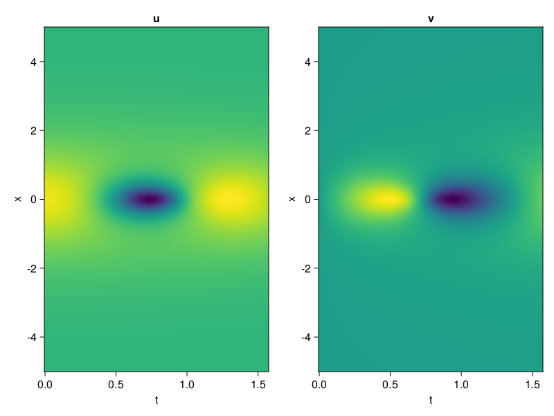
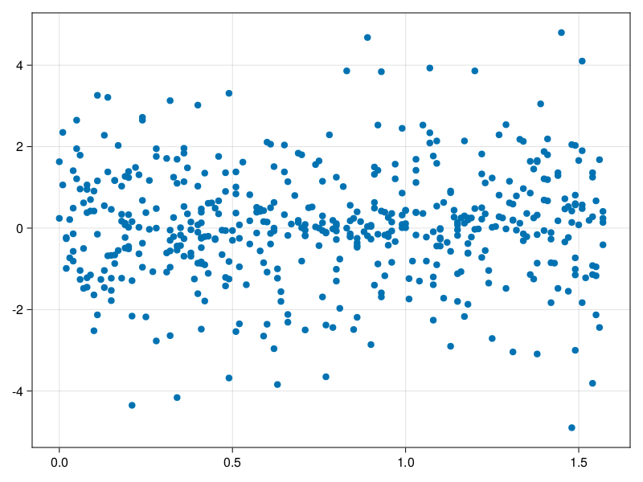

Schrödinger equation
The nonlinear Shrödinger equation is given by
\[\mathrm{i} \partial_t \psi=-\frac{1}{2} \sigma \partial_{x x} \psi-\beta|\psi|^2 \psi\]
Let $\sigma=\beta=1, \psi=u+v i$, the equation can be transformed into a system of partial differential equations
using ModelingToolkit, IntervalSets, Sophon, CairoMakie
using Optimization, OptimizationOptimJL
@parameters x,t
@variables u(..), v(..)
Dₜ = Differential(t)
Dₓ² = Differential(x)^2
eqs=[Dₜ(u(x,t)) ~ -Dₓ²(v(x,t))/2 - (abs2(v(x,t)) + abs2(u(x,t))) * v(x,t),
Dₜ(v(x,t)) ~ Dₓ²(u(x,t))/2 + (abs2(v(x,t)) + abs2(u(x,t))) * u(x,t)]
bcs = [u(x, 0.0) ~ 2sech(x),
v(x, 0.0) ~ 0.0,
u(-5.0, t) ~ u(5.0, t),
v(-5.0, t) ~ v(5.0, t)]
domains = [x ∈ Interval(-5.0, 5.0),
t ∈ Interval(0.0, π/2)]
@named pde_system = PDESystem(eqs, bcs, domains, [x,t], [u(x,t),v(x,t)])\[ \begin{align} \frac{\mathrm{d}}{\mathrm{d}t} u\left( x, t \right) =& - \frac{1}{2} \frac{\mathrm{d}}{\mathrm{d}x} \frac{\mathrm{d}}{\mathrm{d}x} v\left( x, t \right) - \left( \left|u\left( x, t \right)\right|^{2} + \left|v\left( x, t \right)\right|^{2} \right) v\left( x, t \right) \\ \frac{\mathrm{d}}{\mathrm{d}t} v\left( x, t \right) =& \frac{1}{2} \frac{\mathrm{d}}{\mathrm{d}x} \frac{\mathrm{d}}{\mathrm{d}x} u\left( x, t \right) + \left( \left|u\left( x, t \right)\right|^{2} + \left|v\left( x, t \right)\right|^{2} \right) u\left( x, t \right) \end{align} \]
pinn = PINN(u = Siren(2,1; hidden_dims=16,num_layers=4, omega = 1.0),
v = Siren(2,1; hidden_dims=16,num_layers=4, omega = 1.0))
sampler = QuasiRandomSampler(500, (200,200,20,20))
strategy = NonAdaptiveTraining(1,(10,10,1,1))
prob = Sophon.discretize(pde_system, pinn, sampler, strategy)OptimizationProblem. In-place: true
u0: ComponentVector{Float64}(u = (layer_1 = (weight = [0.2978743314743042 -0.27430516481399536; 0.17213314771652222 -0.331745445728302; … ; -0.33988022804260254 0.013384044170379639; -0.257216215133667 0.36768561601638794], bias = [0.0; 0.0; … ; 0.0; 0.0;;]), layer_2 = (weight = [-0.10074576735496521 -0.5766044855117798 … -0.006602090317755938 -0.304136723279953; 0.1537269651889801 0.38570889830589294 … 0.45573708415031433 -0.012162244878709316; … ; 0.4027085304260254 -0.3590090572834015 … -0.12068658322095871 0.14911866188049316; 0.05690920352935791 -0.5672212839126587 … -0.0031452986877411604 -0.5703650712966919], bias = [0.0; 0.0; … ; 0.0; 0.0;;]), layer_3 = (weight = [-0.12029135972261429 -0.32177114486694336 … 0.2400241196155548 -0.20089052617549896; -0.22998596727848053 0.4741854965686798 … 0.2336723357439041 0.2826980650424957; … ; -0.3883918225765228 0.45216599106788635 … -0.4048917591571808 -0.1000986248254776; -0.5132029056549072 -0.5368465185165405 … -0.21905115246772766 0.08699605613946915], bias = [0.0; 0.0; … ; 0.0; 0.0;;]), layer_4 = (weight = [-0.32891517877578735 0.08906430751085281 … 0.24087689816951752 -0.4162423014640808; 0.005968008190393448 0.42124006152153015 … 0.5398695468902588 0.3614656627178192; … ; -0.48978036642074585 0.5803899168968201 … 0.45437556505203247 -0.09561318159103394; 0.6102136373519897 0.21498429775238037 … -0.28632283210754395 0.2764240503311157], bias = [0.0; 0.0; … ; 0.0; 0.0;;]), layer_5 = (weight = [-0.31442612409591675 0.5742544531822205 … 0.1108260378241539 -0.502911388874054], bias = [0.0;;])), v = (layer_1 = (weight = [0.15624916553497314 -0.03859323263168335; -0.020451009273529053 0.3299713134765625; … ; 0.04840737581253052 -0.4310998320579529; 0.04439711570739746 0.23925256729125977], bias = [0.0; 0.0; … ; 0.0; 0.0;;]), layer_2 = (weight = [-0.5986456274986267 0.6075826287269592 … 0.5876867771148682 0.4794009327888489; -0.19087785482406616 0.4058936834335327 … 0.5925421118736267 0.5696343183517456; … ; 0.33810046315193176 0.3456503450870514 … -0.06144866347312927 0.5905364155769348; -0.17244727909564972 -0.029138870537281036 … 0.44357725977897644 -0.4384402930736542], bias = [0.0; 0.0; … ; 0.0; 0.0;;]), layer_3 = (weight = [0.306681364774704 0.1070500910282135 … 0.4033823311328888 0.005321223754435778; -0.547153115272522 -0.13827677071094513 … 0.047461919486522675 -0.2996341288089752; … ; -0.39248210191726685 0.24489106237888336 … -0.24193927645683289 -0.22257575392723083; 0.16120213270187378 -0.3580094575881958 … 0.4865208864212036 0.40671077370643616], bias = [0.0; 0.0; … ; 0.0; 0.0;;]), layer_4 = (weight = [-0.5282694697380066 0.5513322353363037 … 0.2793520390987396 0.319048672914505; -0.42474567890167236 0.26418536901474 … 0.4903784394264221 -0.2785610556602478; … ; -0.11923795938491821 -0.5337460041046143 … -0.006917963270097971 -0.24094881117343903; -0.3783828020095825 -0.029082441702485085 … -0.14443261921405792 0.2592013478279114], bias = [0.0; 0.0; … ; 0.0; 0.0;;]), layer_5 = (weight = [-0.11836275458335876 -0.03333749249577522 … 0.5258671045303345 0.31865882873535156], bias = [0.0;;])))Now we train the neural nets and resample data while training.
function train(pde_system, prob, sampler, strategy, resample_period = 500, n=10)
bfgs = BFGS()
res = Optimization.solve(prob, bfgs; maxiters=2000)
for i in 1:n
data = Sophon.sample(pde_system, sampler)
prob = remake(prob; u0=res.u, p=data)
res = Optimization.solve(prob, bfgs; maxiters=resample_period)
end
return res
end
res = train(pde_system, prob, sampler, strategy)u: ComponentVector{Float64}(u = (layer_1 = (weight = [0.8837942705899664 0.5263825365074969; 0.3070207984858887 -0.07392970473375403; … ; -0.636432635594867 0.2573565942300066; -0.40629349014179944 -0.27834072802783405], bias = [-0.47551968970257597; 0.09403809988167729; … ; -0.20975535167577042; 0.6326886775313577;;]), layer_2 = (weight = [-0.15479198348168235 -0.3272614032413879 … -0.07645493767221061 -0.450957166045977; -0.10040254242089672 0.4363412822737503 … 0.3727837702172393 -0.26189190248102584; … ; 0.7347315568839717 -0.4599597678330946 … 0.1403627990892381 -0.17642880797399613; -0.027693189518891964 -0.9237475221490195 … 0.18517713202168035 -0.3526226066727443], bias = [0.04383786309717814; 0.04627391922796326; … ; -0.21513914883578758; 0.08368298056463515;;]), layer_3 = (weight = [0.023676280393281138 -0.5270097038395086 … 0.6135701199774076 -0.128462574919527; -0.17230044467179995 0.08825575490599659 … 0.5177822358765874 0.19752455907071131; … ; -0.34211859362475966 0.62826708936203 … -0.8607573908655273 -0.36295041482774926; -0.5343396561496173 -0.6635700439630676 … 0.11553617367214401 0.17884536280316624], bias = [-0.1994661189245794; -0.054745805066521935; … ; 0.21983023446894037; 0.10805644559166333;;]), layer_4 = (weight = [-0.3648697606152534 0.04409520650925917 … -0.0146314407360137 -0.878751436308475; 0.11579357895903213 -0.2320389073521773 … 0.32602480612333345 0.6669054365267687; … ; -0.6061094912401966 0.37153353414975543 … 0.6744083190729688 -0.3101332961763935; 0.8841247012783202 -0.030174517486637915 … -0.7889239876486694 -0.08248049550808756], bias = [-0.4859735307128294; 0.1794374852375898; … ; -0.2168592661230709; -0.20003019198796704;;]), layer_5 = (weight = [-0.4505471905388225 0.5617900186980378 … 0.18467789067698992 -0.4553389697689295], bias = [-0.13159604350427842;;])), v = (layer_1 = (weight = [0.4060781443584542 -0.12591008565880674; 0.45798597849491235 0.35350923217246905; … ; 0.13935745890369794 -0.3773294929346618; 0.13598061686546964 0.5445972562931607], bias = [-0.043241796199521274; -0.21736632246198373; … ; -0.4712765197186663; -0.33728926435218737;;]), layer_2 = (weight = [-0.31911189253998623 0.9372967930953652 … 0.5322438917850153 0.7205918464146656; -0.14175966865843687 0.343406531842282 … 0.6696499243379936 0.5280507122319243; … ; 0.39102991554975053 0.6039762459318567 … -0.2703945399446531 0.7728360404677317; -0.09170934723669824 -0.06617520941259625 … 0.4532761801525287 -0.3507307233241459], bias = [-0.22170191980382534; -0.21308441351753526; … ; 0.2314695617252109; -0.10231555708594015;;]), layer_3 = (weight = [0.22435965779097278 0.1528885736095814 … 0.025789845228675824 -0.05010949229311124; -0.18235193763995225 -0.28841665004220557 … 0.04940086031310611 -0.012769383886396047; … ; -0.2794800444265415 0.27693670653278946 … -0.06703677236925248 0.05245564025372756; 0.1382291133237219 -0.3269141086291703 … 0.5576102226218312 0.4365858476110492], bias = [0.03797609778967308; -0.09454212402056861; … ; -0.08484537504191542; -0.03287335552235858;;]), layer_4 = (weight = [-0.5651546750266566 0.4155318453676811 … 0.4085638625700188 0.41250094841022744; -0.5661789602385352 0.3643295329827359 … 0.5272402462871575 -0.21905038596720774; … ; 0.2951997148620897 -0.8491369104059482 … -0.09505697217172356 -0.23761992382049751; -0.17286453562772963 -0.20647330305508518 … 0.1198261722513461 -0.08080576836946547], bias = [-0.2880130383466196; -0.05193342024003969; … ; 0.341585201103763; 0.3105068268611895;;]), layer_5 = (weight = [-0.09280020758562121 0.12067784688147329 … 0.24691453220675844 0.6737676589957418], bias = [0.09604436513477285;;])))phi = pinn.phi
ps = res.u
xs, ts= [infimum(d.domain):0.01:supremum(d.domain) for d in pde_system.domain]
u = [sum(phi.u(([x,t]), ps.u)) for x in xs, t in ts]
v = [sum(phi.v(([x,t]), ps.v)) for x in xs, t in ts]
ψ = @. sqrt(u^2+ v^2)
axis = (xlabel="t", ylabel="x", title="u")
fig, ax1, hm1 = heatmap(ts, xs, u', axis=axis)
ax2, hm2= heatmap(fig[1, end+1], ts, xs, v', axis= merge(axis, (; title="v")))
display(fig)
axis = (xlabel="t", ylabel="x", title="ψ")
fig, ax1, hm1 = heatmap(ts, xs, ψ', axis=axis, colormap=:jet)
Colorbar(fig[:, end+1], hm1)
display(fig)
Customize Sampling
Bascially any sampling method is supportted. For example we can sample data according to the predicted solution.
using StatsBase
data = vec([[x, t] for x in xs, t in ts])
wv = vec(ψ)
new_data = wsample(data, wv, 500)
new_data = reduce(hcat, new_data)
fig, ax = scatter(new_data[2,:], new_data[1,:])
prob.p[1] = new_data
prob.p[2] = new_data
prob = remake(prob; u0 = res.u)
# res = Optimization.solve(prob, bfgs; maxiters=1000)OptimizationProblem. In-place: true
u0: ComponentVector{Float64}(u = (layer_1 = (weight = [0.8837942705899664 0.5263825365074969; 0.3070207984858887 -0.07392970473375403; … ; -0.636432635594867 0.2573565942300066; -0.40629349014179944 -0.27834072802783405], bias = [-0.47551968970257597; 0.09403809988167729; … ; -0.20975535167577042; 0.6326886775313577;;]), layer_2 = (weight = [-0.15479198348168235 -0.3272614032413879 … -0.07645493767221061 -0.450957166045977; -0.10040254242089672 0.4363412822737503 … 0.3727837702172393 -0.26189190248102584; … ; 0.7347315568839717 -0.4599597678330946 … 0.1403627990892381 -0.17642880797399613; -0.027693189518891964 -0.9237475221490195 … 0.18517713202168035 -0.3526226066727443], bias = [0.04383786309717814; 0.04627391922796326; … ; -0.21513914883578758; 0.08368298056463515;;]), layer_3 = (weight = [0.023676280393281138 -0.5270097038395086 … 0.6135701199774076 -0.128462574919527; -0.17230044467179995 0.08825575490599659 … 0.5177822358765874 0.19752455907071131; … ; -0.34211859362475966 0.62826708936203 … -0.8607573908655273 -0.36295041482774926; -0.5343396561496173 -0.6635700439630676 … 0.11553617367214401 0.17884536280316624], bias = [-0.1994661189245794; -0.054745805066521935; … ; 0.21983023446894037; 0.10805644559166333;;]), layer_4 = (weight = [-0.3648697606152534 0.04409520650925917 … -0.0146314407360137 -0.878751436308475; 0.11579357895903213 -0.2320389073521773 … 0.32602480612333345 0.6669054365267687; … ; -0.6061094912401966 0.37153353414975543 … 0.6744083190729688 -0.3101332961763935; 0.8841247012783202 -0.030174517486637915 … -0.7889239876486694 -0.08248049550808756], bias = [-0.4859735307128294; 0.1794374852375898; … ; -0.2168592661230709; -0.20003019198796704;;]), layer_5 = (weight = [-0.4505471905388225 0.5617900186980378 … 0.18467789067698992 -0.4553389697689295], bias = [-0.13159604350427842;;])), v = (layer_1 = (weight = [0.4060781443584542 -0.12591008565880674; 0.45798597849491235 0.35350923217246905; … ; 0.13935745890369794 -0.3773294929346618; 0.13598061686546964 0.5445972562931607], bias = [-0.043241796199521274; -0.21736632246198373; … ; -0.4712765197186663; -0.33728926435218737;;]), layer_2 = (weight = [-0.31911189253998623 0.9372967930953652 … 0.5322438917850153 0.7205918464146656; -0.14175966865843687 0.343406531842282 … 0.6696499243379936 0.5280507122319243; … ; 0.39102991554975053 0.6039762459318567 … -0.2703945399446531 0.7728360404677317; -0.09170934723669824 -0.06617520941259625 … 0.4532761801525287 -0.3507307233241459], bias = [-0.22170191980382534; -0.21308441351753526; … ; 0.2314695617252109; -0.10231555708594015;;]), layer_3 = (weight = [0.22435965779097278 0.1528885736095814 … 0.025789845228675824 -0.05010949229311124; -0.18235193763995225 -0.28841665004220557 … 0.04940086031310611 -0.012769383886396047; … ; -0.2794800444265415 0.27693670653278946 … -0.06703677236925248 0.05245564025372756; 0.1382291133237219 -0.3269141086291703 … 0.5576102226218312 0.4365858476110492], bias = [0.03797609778967308; -0.09454212402056861; … ; -0.08484537504191542; -0.03287335552235858;;]), layer_4 = (weight = [-0.5651546750266566 0.4155318453676811 … 0.4085638625700188 0.41250094841022744; -0.5661789602385352 0.3643295329827359 … 0.5272402462871575 -0.21905038596720774; … ; 0.2951997148620897 -0.8491369104059482 … -0.09505697217172356 -0.23761992382049751; -0.17286453562772963 -0.20647330305508518 … 0.1198261722513461 -0.08080576836946547], bias = [-0.2880130383466196; -0.05193342024003969; … ; 0.341585201103763; 0.3105068268611895;;]), layer_5 = (weight = [-0.09280020758562121 0.12067784688147329 … 0.24691453220675844 0.6737676589957418], bias = [0.09604436513477285;;])))